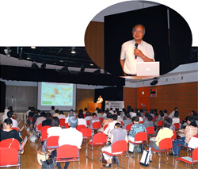

|
|
■テーマ ｢原発に、未来を託せるか｣ 講師：清水 修二氏 (福島大学教授経済経営学類国際地域経済専攻) ＜概 要＞  チェルノブイリ原発事故を教訓とするために 年を追っての現地入り取材に基づくデータから、事故時の原子炉の崩壊の様子からも、チェルノブイリの方が、プルトニウム、ストロンチウムなど全部放出されるという高濃度・広範囲の放射能事故で、比較して福島は微量と言えます。しかし、放出されずに未だに福島原発内にある核燃料の処理が課題です。チェルノブイリでは移住が基本。除染＝家屋破壊(帰環不可に)、埋立て(火災による放射能放出を防止)です。事故後36時間後に避難指示、３時間で1,100台のバスを出し、167の町は消滅しましたが、賠償、補償は現物支給のため、住宅と仕事、生活が守られました。福島は、土地家屋が私有財産ということもあり、帰還を想定しての避難。賠償補償は現金支給で、仕事も自分で探し、自治体は存続しています。避難することの被害は大きいです。最も｢震災関連死｣が多いのは福島の人です。原発事故の避難や帰還について、チェルノブイリ事故から25年間で、測定、除染、医療の技術の発達が見られます。３段階に汚染ゾーンがしかれ、未だに年間積算線量25mSv以上の地域は立入制限ありの｢帰還困難区域｣とされています。県の７割が山地という福島は山林の除染を含めると費用が必要。汚染ゾーニングは事故時の被曝＋土壌の汚染、これが食品に含まれ内部被曝に至ることを考えています。 放射能のストレス 子どもの甲状腺に現れるヨウ素131の被爆、今はないが、取り込んでしまったものについては取り返しがつきません。急性放射線障害の死者はないです。25年経っても放射線による健康障害が見えない、分からないこと、疑心暗鬼へのストレスは大きいです。福島人口202万人が今では198万人。被災した学校の子どもたちは、低年齢化するほど県内外への移動が多く見られます。年代別の帰還の意思を見ても、若い人ほど戻らなくていいという傾向です。すると、農業の再生の際、担い手はいるのでしょうか。再生には除染のコストの問題があります。数十億の農業生産高の為に数千億円の除染費用。農地を用意し移住した方が安いが、簡単に論議できません。 避難者と、福島に留まっている住民と、それぞれの状況で困難です。避難者は先の見通しが立たず、賠償金と義援金頼みの生計で働く気力が萎え、受け入れ地の住民から｢原発からの受益者｣として向けられる目や自主避難の難しさを感じています。留まっている住民は、被害者同士の対立、子どもが犠牲という発言に苦しみ、健康被害の有無と原発の是非は別と考え、被害が小さいことを望んでいます。 原発は、はっきり国民が意思表示して出来た自覚なき選択、新たなチャレンジが出来ない怠惰な現実主義から災害に至って、瓦礫処理の問題が残っています。地域差別の構造に支えられた原子力の廃棄物は、やはり貧しい所で処理されていくのです。 |